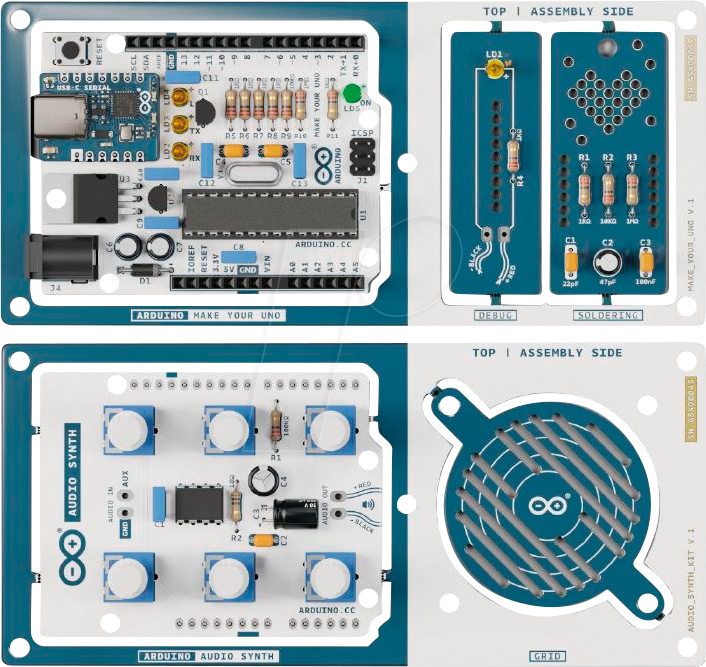
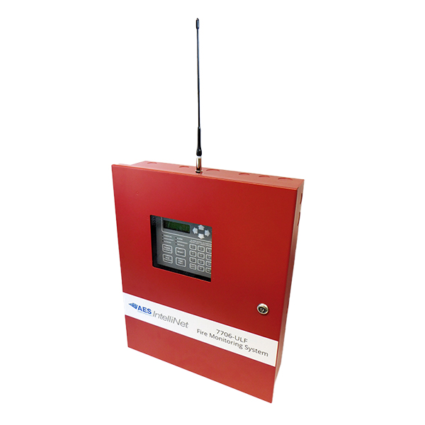

Check out this page to see my disaster
relief research project relating to wildfires.
Click the link below to learn more.
Click Here

Disaster Relief
Check out this page to see my work relating to electro-assembly
on the Arduino Uno.
Click the link below to learn more.
Click Here

Electro-Assembly
Check out this page to see my work on the Monitoring Station project.
Click the link below to learn more.
Click Here

Monitoring Station
Check out this page to see my work on the Robot Programming project.
Click the link below to learn more.
Click Here
Robot Programming
Check out this page to see my work on the Rover Recovery Mission project.
Click the link below to learn more.
Click Here